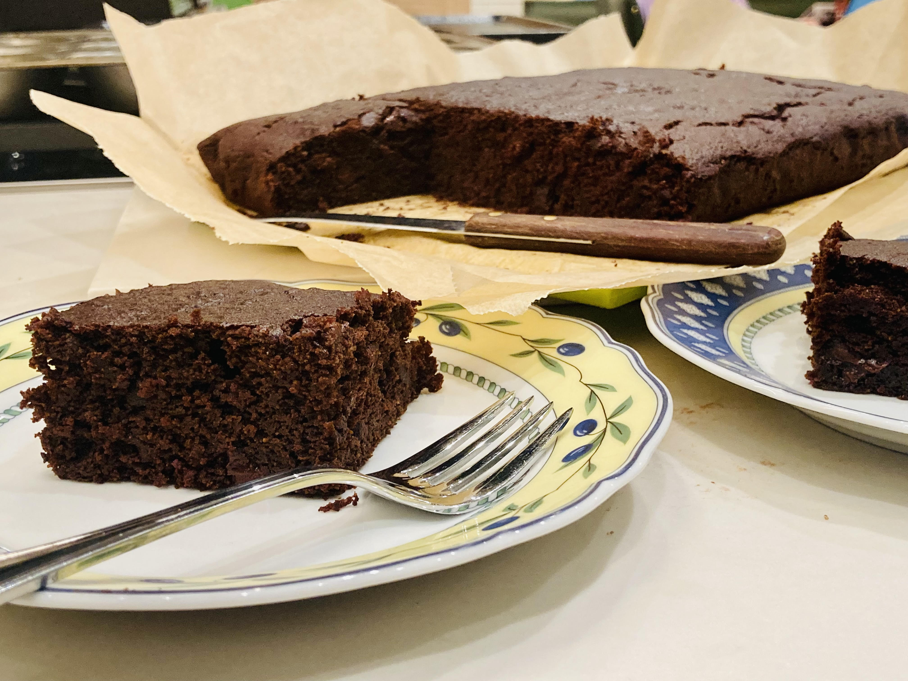

Chocolate-Pumpkin Sheet Cake

By Daniel Wagman
October, 2022
Pumpkin, pumpkin, everything pumpkin. But what about chocolate, too? If you like chocolate chips in your pumpkin bread, then this recipe is for you! If you don’t, you’ll appreciate the additions cloves and cardamom for warmth and the use of extra-virgin olive oil for a fruity, savory kick. Either way, this crowd-pleasing sheet cake will not disappoint.